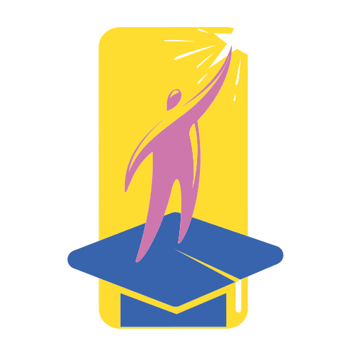

KV, CBSE
2009
Completed year 12 with computer science as major in reputed institution in India with good scores. This allowed me to step into next phase of my educational journey.
SVCE, VTU
2013
Pursued Bachelors degree in Information science and Engineering from a recognised University.

THE AUSTRALIAN NATIONAL UNIVERSITY
2017
Completed the Master's degree with major in Artificial Intelligence.